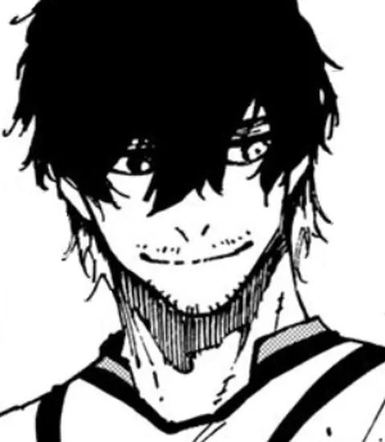
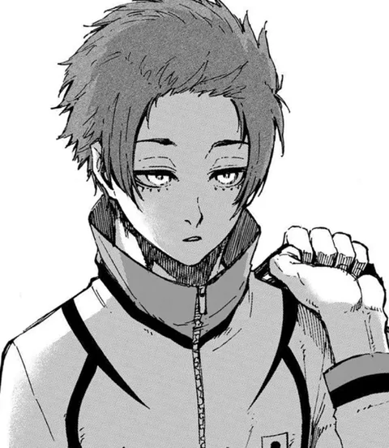

Blue Lock × Sub-20
O projeto inteiro vale um jogo: o Blue Lock Eleven contra a seleção Sub-20 do Japão.

Para o Blue Lock continuar existindo, os melhores formam o Blue Lock Eleven e encaram a Sub-20.

O capitão Aiku comanda a defesa do outro lado.
Aiku“Defender também é instinto.”

A estrela adversária é Sae Itoshi, o irmão mais velho de Rin.
Sae“O futebol do Japão ainda é pequeno demais.”

Shidou, imprevisível, é convocado junto com ele.

Entre os irmãos Itoshi, a partida vira um acerto de contas.

No fim, Isagi surge no espaço que ninguém viu.
O gol decisivo é dele. O Blue Lock vence a Sub-20.
Ego“Agora começa a parte difícil: o mundo.”
Rivais lado a lado, cada um querendo ser o único.
E se fosse só um contra um?